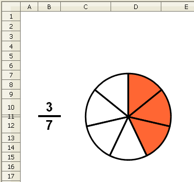

Presentació gràfica de l'activitat

Funcions que es fan servir en aquesta activitat
Objectiu de l'activitat
Expressar mitjançant un diagrama de sectors una fracció.
Desenvolupament de l'activitat
1. Obrir el fitxer M3 i canviar el nom de pel de M3P3 fracció gràfica
2. Escriure a la cel·la B10: =SI(A1=0;ALEATENTRE(1;9))
3. Alçada de la fila 11: 1mm
4.Fer que l'amplada de la columna A sigui de 0,81cm i que l'amplada de la columna B sigui d'1,04cm
5. Fer que el color de fons de la cel·la B11 sigui negre
6. Escriure a la cel·la B12: =SI(A1=0;ALEATENTRE(B10;9))
D'aquesta manera el denominador sempre serà igual o major que el numerador.
7. Escriure a la cel·la
G2:
=B10
8. Escriure a la cel·la
G3:
=B12
9. Escriure a la cel·la
F3:
=G2/G3
10. Escriure a la cel·la
F2:
=1-F3
El valor de G3 representa les parts en que es divideix la unitat i el valor de G2 representa les parts que es prenen . En dividir G3 entre G2 dóna un valor d'allò que es pren, sent el valor de F2 el valor del que no es pren (la unitat menys el que es pren (F3). .
11.Fer un diagrama de sectors amb les dades que hi ha a les cel·les del rang F2:F3.
En mostrar l'assistent el primer pas per fer el diagrama, fer clic en Diagrames de sectors i clic en Finalitza. Després fer el següent:
Apropar el cursor del ratolí a la llegenda del diagrama fins que es mostri la paraula "llegenda". En fer-ho, fer clic a la llegenda per eleminar-la amb la tecla Supr
Per canviar els colors dels sectors. fer el següent:
Fer clic en qualsevol dels sectors i observar que apareixen uns quadradets verds.
Moure al punter del ratolí pels sectors del diagrama fins que es mostri una finestreta en que hagi escrit "Punt de dades 1 …"
En veure aquesta finestreta, fer clic al sector i del menú, anar a Format | Formata la selecció | clic en la solapa Àrea i triar el color taronja 2
Finalment fer clic en d'acord
Fer el mateix procediment perquè l'altre sector sigui de color blanc.
12. Escriure a la cel·la F4: =SI($B$12>=1;1;"")
13. Copiar la cel·la F4 a les cel·les del rang G4:O4 tenint en compte que després caldrà modificar el valor que hi ha després de l'igual augment-lo en una unitat fins arribar a 10. Exemple: cel·la F4: =SI($B$12>=1;1;""), cel·la G4: =SI($B$12>=2;1;"") …
D'aquesta manera, en fer un diagrama de sectors del rang F4:O4 s'obté un cercle dividit en tantes parts com igual és el resultat de la suma(F4:O4), sent els graus de cada una d'questes parts (sectors) divisible pels graus de cada un dels sectors del diagrama representat per les cel·les F2 i F3.
14. Fer un segon diagrama de sectors amb les dades que hi ha a les cel·les
F4:
O4 i també eleminar la llegenda.
En mostrar l'assistent el primer pas per fer el diagrama, fer clic en Diagrames de sectors i clic en Finalitza. Després fer el següent:
Apropar el cursor del ratolí a la llegenda del diagrama fins que es mostri la paraula "llegenda". En fer-ho, fer clic a la llegenda per eleminar-la amb la tecla Supr
Apropar el cursor del ratolí a la línea del marc del diagrama fins que es mostri una finestreta amb el text: "Àrea del diagrama"
En mostrar aquest text, fer clic amb el botó esquerra del ratolí
Del menú, anar a Format | Formata la selecció | i clic en la solapa Transparència per seleccionar l'opció de transparència i escriure-hi 100 a la casella corresponent. D'aquesta manera es fa transparent l'àrea del diagrama.
Finalment fer clic en d'acord.
Ara també convé fer transparent els punts de dades (els sectors). Es pot fer de la següent manera:
Apropar el cursor del ratolí a qualsevol línea del diagrama fins que es mostri una finestreta amb el text: "Punt de dades …"
En mostrar aquest text, fer clic amb el botó esquerra del ratolí
Del menú, anar a Format | Formata la selecció | i clic en la solapa Transparència per seleccionar l'opció de transparència i escriure-hi 100 a la casella corresponent. D'aquesta manera es fan transparents els sectors del diagrama.
Tenint fetes les transparències, es posarà un diagrama a sobre de l'altre perquè sembli que hagi un sol diagrama. Es pot fer de la següent manera:
Fer clic en qualsevol cel·la, tornar a fer clic al primer diagrama i clic al botó dret del ratolí per mostrar el menú contextual.
D'aquest menú contextual, fer clic en Posició i mida …
Fer clic a la solapa Posició i mida i escriure les dades següents:
Amplada del diagrama: 4,82cm
Alçada del diagrama: 4,00cm
Posició X del diagrama: 2,43cm
Posició Y del diagrama: 2,67cm
Fer clic en d'acord
Fer que l'altre diagrama tingui la mateixa amplada, alçada i posicións X i Y
Organtizar els diagrames
Per posar un diagrama damunt l'altre perquè sembli que hagi un sol diagrama, fer que les amplades, les alçaces i les posicions
X i
Y de tots dos diagrames siguin les mateixes.
El diagrama que té les transparències al 100% convé que estigui damunt de l'altre diagrama. En cas que estigui al davall (enrera), caldrà seleccionar-lo i fent clic amb el botó dret del ratolí triar
Organitza del menú contextual i després clic en
Porta-ho al davant.
Gruix de les línes del diagrames (vores)
Dels dos diagrames, només s'ha modificat el gruix del diagrama transparent per millorar la presentació del gràfic de la presentació de l'activitat. Per modificar el gruix de les línies del diagrama, fer el següent:
Fer doble clic al diagrama i després fer-hi clic en qualsevol punt de la línia del cercle o de les línies dels sectors amb la qual cosa es mostrarà un quadradet de color verd en cada sector del diagrama.
De la barra de menú, fer clic en Format | Formata la selecció | clic en la solapa Vores i escriure una mesura determinada a la casella del bloc de l'Amplada. Variar aquesta mesura i observar el resultat.
15. Escriure el número 9 a la cel·la B12 i observar que aquest últim diagrama es divideix en 9 parts. Després tornar a escriure a la cel·la B12: =SI(A1=0;ALEATENTRE(B10;9))
16. Fer una macro amb la següents funcions:
17. Protegir les cel·les que convingui.
18. Ocultar les cel·les que convingui.
19. Validar la cel·la A1 per al valor 0.
Per validar el contingut d'una cel·la, anar a la barra de menú i demanar:
Dades | Validesa | clic a la solapa Criteri i clic al desplegable del bloc Permet per triar l'opció Nombres complets
Escriure el nonmbre zero a la casella corresponent del bloc Valor
Fer clic en la solapa Avís d'error i escriure a la casella de Titol: Atenció!
Escriure a la casella del bloc Missatge d'error:"Aquesta cel·la només permet el nombre 0"
Finalmen fer clic en d'acord
Comprovar que l'activitat funcioni correctament.
21. Desar el fitxer
M3